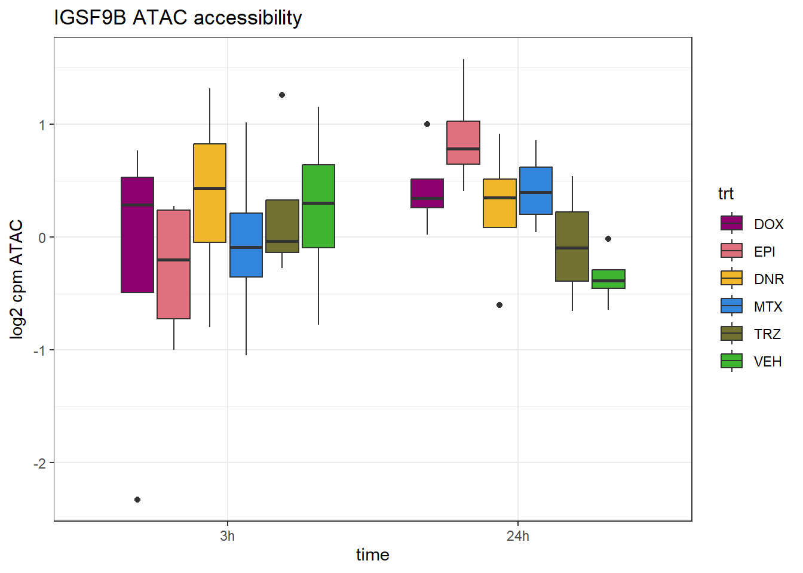

Combine_data
ERM
2024-10-28
Last updated: 2024-10-28
Checks: 7 0
Knit directory: ATAC_learning/
This reproducible R Markdown analysis was created with workflowr (version 1.7.1). The Checks tab describes the reproducibility checks that were applied when the results were created. The Past versions tab lists the development history.
Great! Since the R Markdown file has been committed to the Git repository, you know the exact version of the code that produced these results.
Great job! The global environment was empty. Objects defined in the global environment can affect the analysis in your R Markdown file in unknown ways. For reproduciblity it’s best to always run the code in an empty environment.
The command set.seed(20231016) was run prior to running
the code in the R Markdown file. Setting a seed ensures that any results
that rely on randomness, e.g. subsampling or permutations, are
reproducible.
Great job! Recording the operating system, R version, and package versions is critical for reproducibility.
Nice! There were no cached chunks for this analysis, so you can be confident that you successfully produced the results during this run.
Great job! Using relative paths to the files within your workflowr project makes it easier to run your code on other machines.
Great! You are using Git for version control. Tracking code development and connecting the code version to the results is critical for reproducibility.
The results in this page were generated with repository version 0c8593f. See the Past versions tab to see a history of the changes made to the R Markdown and HTML files.
Note that you need to be careful to ensure that all relevant files for
the analysis have been committed to Git prior to generating the results
(you can use wflow_publish or
wflow_git_commit). workflowr only checks the R Markdown
file, but you know if there are other scripts or data files that it
depends on. Below is the status of the Git repository when the results
were generated:
Ignored files:
Ignored: .RData
Ignored: .Rhistory
Ignored: .Rproj.user/
Ignored: data/ACresp_SNP_table.csv
Ignored: data/ARR_SNP_table.csv
Ignored: data/All_merged_peaks.tsv
Ignored: data/CAD_gwas_dataframe.RDS
Ignored: data/CTX_SNP_table.csv
Ignored: data/Collapsed_expressed_NG_peak_table.csv
Ignored: data/DEG_toplist_sep_n45.RDS
Ignored: data/FRiP_first_run.txt
Ignored: data/Final_four_data/
Ignored: data/Frip_1_reads.csv
Ignored: data/Frip_2_reads.csv
Ignored: data/Frip_3_reads.csv
Ignored: data/Frip_4_reads.csv
Ignored: data/Frip_5_reads.csv
Ignored: data/Frip_6_reads.csv
Ignored: data/GO_KEGG_analysis/
Ignored: data/HF_SNP_table.csv
Ignored: data/Ind1_75DA24h_dedup_peaks.csv
Ignored: data/Ind1_TSS_peaks.RDS
Ignored: data/Ind1_firstfragment_files.txt
Ignored: data/Ind1_fragment_files.txt
Ignored: data/Ind1_peaks_list.RDS
Ignored: data/Ind1_summary.txt
Ignored: data/Ind2_TSS_peaks.RDS
Ignored: data/Ind2_fragment_files.txt
Ignored: data/Ind2_peaks_list.RDS
Ignored: data/Ind2_summary.txt
Ignored: data/Ind3_TSS_peaks.RDS
Ignored: data/Ind3_fragment_files.txt
Ignored: data/Ind3_peaks_list.RDS
Ignored: data/Ind3_summary.txt
Ignored: data/Ind4_79B24h_dedup_peaks.csv
Ignored: data/Ind4_TSS_peaks.RDS
Ignored: data/Ind4_V24h_fraglength.txt
Ignored: data/Ind4_fragment_files.txt
Ignored: data/Ind4_fragment_filesN.txt
Ignored: data/Ind4_peaks_list.RDS
Ignored: data/Ind4_summary.txt
Ignored: data/Ind5_TSS_peaks.RDS
Ignored: data/Ind5_fragment_files.txt
Ignored: data/Ind5_fragment_filesN.txt
Ignored: data/Ind5_peaks_list.RDS
Ignored: data/Ind5_summary.txt
Ignored: data/Ind6_TSS_peaks.RDS
Ignored: data/Ind6_fragment_files.txt
Ignored: data/Ind6_peaks_list.RDS
Ignored: data/Ind6_summary.txt
Ignored: data/Knowles_4.RDS
Ignored: data/Knowles_5.RDS
Ignored: data/Knowles_6.RDS
Ignored: data/LiSiLTDNRe_TE_df.RDS
Ignored: data/MI_gwas.RDS
Ignored: data/SNP_GWAS_PEAK_MRC_id
Ignored: data/SNP_GWAS_PEAK_MRC_id.csv
Ignored: data/SNP_gene_cat_list.tsv
Ignored: data/SNP_supp_schneider.RDS
Ignored: data/TE_info/
Ignored: data/TFmapnames.RDS
Ignored: data/all_TSSE_scores.RDS
Ignored: data/all_four_filtered_counts.txt
Ignored: data/aln_run1_results.txt
Ignored: data/anno_ind1_DA24h.RDS
Ignored: data/anno_ind4_V24h.RDS
Ignored: data/annotated_gwas_SNPS.csv
Ignored: data/background_n45_he_peaks.RDS
Ignored: data/cardiac_muscle_FRIP.csv
Ignored: data/cardiomyocyte_FRIP.csv
Ignored: data/col_ng_peak.csv
Ignored: data/cormotif_full_4_run.RDS
Ignored: data/cormotif_full_4_run_he.RDS
Ignored: data/cormotif_full_6_run.RDS
Ignored: data/cormotif_full_6_run_he.RDS
Ignored: data/cormotif_probability_45_list.csv
Ignored: data/cormotif_probability_45_list_he.csv
Ignored: data/cormotif_probability_all_6_list.csv
Ignored: data/cormotif_probability_all_6_list_he.csv
Ignored: data/embryo_heart_FRIP.csv
Ignored: data/enhancer_list_ENCFF126UHK.bed
Ignored: data/enhancerdata/
Ignored: data/filt_Peaks_efit2.RDS
Ignored: data/filt_Peaks_efit2_bl.RDS
Ignored: data/filt_Peaks_efit2_n45.RDS
Ignored: data/first_Peaksummarycounts.csv
Ignored: data/first_run_frag_counts.txt
Ignored: data/full_bedfiles/
Ignored: data/gene_ref.csv
Ignored: data/gwas_1_dataframe.RDS
Ignored: data/gwas_2_dataframe.RDS
Ignored: data/gwas_3_dataframe.RDS
Ignored: data/gwas_4_dataframe.RDS
Ignored: data/gwas_5_dataframe.RDS
Ignored: data/high_conf_peak_counts.csv
Ignored: data/high_conf_peak_counts.txt
Ignored: data/high_conf_peaks_bl_counts.txt
Ignored: data/high_conf_peaks_counts.txt
Ignored: data/hits_files/
Ignored: data/hyper_files/
Ignored: data/hypo_files/
Ignored: data/ind1_DA24hpeaks.RDS
Ignored: data/ind1_TSSE.RDS
Ignored: data/ind2_TSSE.RDS
Ignored: data/ind3_TSSE.RDS
Ignored: data/ind4_TSSE.RDS
Ignored: data/ind4_V24hpeaks.RDS
Ignored: data/ind5_TSSE.RDS
Ignored: data/ind6_TSSE.RDS
Ignored: data/initial_complete_stats_run1.txt
Ignored: data/left_ventricle_FRIP.csv
Ignored: data/median_24_lfc.RDS
Ignored: data/median_3_lfc.RDS
Ignored: data/mergedPeads.gff
Ignored: data/mergedPeaks.gff
Ignored: data/motif_list_full
Ignored: data/motif_list_n45
Ignored: data/motif_list_n45.RDS
Ignored: data/multiqc_fastqc_run1.txt
Ignored: data/multiqc_fastqc_run2.txt
Ignored: data/multiqc_genestat_run1.txt
Ignored: data/multiqc_genestat_run2.txt
Ignored: data/my_hc_filt_counts.RDS
Ignored: data/my_hc_filt_counts_n45.RDS
Ignored: data/n45_bedfiles/
Ignored: data/n45_files
Ignored: data/other_papers/
Ignored: data/peakAnnoList_1.RDS
Ignored: data/peakAnnoList_2.RDS
Ignored: data/peakAnnoList_24_full.RDS
Ignored: data/peakAnnoList_24_n45.RDS
Ignored: data/peakAnnoList_3.RDS
Ignored: data/peakAnnoList_3_full.RDS
Ignored: data/peakAnnoList_3_n45.RDS
Ignored: data/peakAnnoList_4.RDS
Ignored: data/peakAnnoList_5.RDS
Ignored: data/peakAnnoList_6.RDS
Ignored: data/peakAnnoList_Eight.RDS
Ignored: data/peakAnnoList_full_motif.RDS
Ignored: data/peakAnnoList_n45_motif.RDS
Ignored: data/siglist_full.RDS
Ignored: data/siglist_n45.RDS
Ignored: data/summary_peakIDandReHeat.csv
Ignored: data/test.list.RDS
Ignored: data/testnames.txt
Ignored: data/toplist_6.RDS
Ignored: data/toplist_full.RDS
Ignored: data/toplist_full_DAR_6.RDS
Ignored: data/toplist_n45.RDS
Ignored: data/trimmed_seq_length.csv
Ignored: data/unclassified_full_set_peaks.RDS
Ignored: data/unclassified_n45_set_peaks.RDS
Ignored: data/xstreme/
Ignored: trimmed_Ind1_75DA24h_S7.nodup.splited.bam/
Untracked files:
Untracked: Correlationplot_scaled.pdf
Untracked: DOX_DAR_assess.Rmd
Untracked: EAR_2_plot.pdf
Untracked: ESR_1_plot.pdf
Untracked: Firstcorr plotATAC.pdf
Untracked: IND1_2_3_6_corrplot.pdf
Untracked: LR_3_plot.pdf
Untracked: NR_1_plot.pdf
Untracked: analysis/Expressed_RNA_associations.Rmd
Untracked: analysis/LFC_corr.Rmd
Untracked: analysis/ReHeat_analysis.Rmd
Untracked: analysis/SVA.Rmd
Untracked: analysis/TE_analysis_old.Rmd
Untracked: analysis/my_hc_filt_counts.csv
Untracked: analysis/nucleosome_explore.Rmd
Untracked: code/IGV_snapshot_code.R
Untracked: code/LongDARlist.R
Untracked: code/MRC_clusterlog2cpm.R
Untracked: code/TSSE.R
Untracked: code/just_for_Fun.R
Untracked: code/toplist_assembly.R
Untracked: dataredo.RData
Untracked: lcpm_filtered_corplot.pdf
Untracked: log2cpmfragcount.pdf
Untracked: output/cormotif_probability_45_list.csv
Untracked: output/cormotif_probability_all_6_list.csv
Untracked: output_1_Mecom.txt
Untracked: splited/
Untracked: trimmed_Ind1_75DA24h_S7.nodup.fragment.size.distribution.pdf
Untracked: trimmed_Ind1_75DA3h_S1.nodup.fragment.size.distribution.pdf
Unstaged changes:
Modified: analysis/CorMotif_data_n45.Rmd
Modified: analysis/Enhancer_files_ff.Rmd
Modified: analysis/Enrichment_motif.Rmd
Modified: analysis/Jaspar_motif_ff.Rmd
Modified: analysis/Peak_calling.Rmd
Modified: analysis/Raodah.Rmd
Modified: analysis/Smaller_set_DAR.Rmd
Modified: analysis/TE_analysis.Rmd
Modified: analysis/TE_analysis_ff.Rmd
Modified: analysis/final_four_analysis.Rmd
Note that any generated files, e.g. HTML, png, CSS, etc., are not included in this status report because it is ok for generated content to have uncommitted changes.
These are the previous versions of the repository in which changes were
made to the R Markdown (analysis/final_plot_attempt.Rmd)
and HTML (docs/final_plot_attempt.html) files. If you’ve
configured a remote Git repository (see ?wflow_git_remote),
click on the hyperlinks in the table below to view the files as they
were in that past version.
| File | Version | Author | Date | Message |
|---|---|---|---|---|
| Rmd | 0c8593f | reneeisnowhere | 2024-10-28 | updates to new SNP associaitions |
| html | ad854f2 | reneeisnowhere | 2024-10-24 | Build site. |
| Rmd | d949388 | reneeisnowhere | 2024-10-24 | wflow_publish("analysis/final_plot_attempt.Rmd") |
| html | 6074022 | reneeisnowhere | 2024-10-17 | Build site. |
| Rmd | 00d7d3d | reneeisnowhere | 2024-10-17 | updates |
library(tidyverse)
library(kableExtra)
library(broom)
library(RColorBrewer)
library("TxDb.Hsapiens.UCSC.hg38.knownGene")
library("org.Hs.eg.db")
library(rtracklayer)
library(ggfortify)
library(readr)
library(BiocGenerics)
library(gridExtra)
library(VennDiagram)
library(scales)
library(ggVennDiagram)
library(BiocParallel)
library(ggpubr)
library(edgeR)
library(genomation)
library(ggsignif)
library(plyranges)
library(ggrepel)
library(ComplexHeatmap)
library(cowplot)
library(smplot2)# toplistall_RNA <- readRDS("data/other_papers/toplistall_RNA.RDS")
# toplistall_RNA <- toplistall_RNA %>%
# mutate(logFC = logFC*(-1))
# toplist_ATAC <- readRDS("data/Final_four_data/toplist_ff.RDS")
Collapsed_H3k27ac_NG <- read_delim("data/Final_four_data/H3K27ac_files/Collapsed_H3k27ac_NG.txt",delim = "\t",col_names = TRUE)
Collapsed_new_peaks <- read_delim("data/Final_four_data/collapsed_new_peaks.txt", delim = "\t", col_names = TRUE)
RNA_median_3_lfc <- readRDS("data/other_papers/RNA_median_3_lfc.RDS")
RNA_median_24_lfc <- readRDS("data/other_papers/RNA_median_24_lfc.RDS")
overlap_df_ggplot <- readRDS("data/Final_four_data/LFC_ATAC_K27ac.RDS")
AC_median_3_lfc <- read_csv("data/Final_four_data/AC_median_3_lfc.csv")
AC_median_24_lfc <- read_csv("data/Final_four_data/AC_median_24_lfc.csv")
ATAC_24_lfc <- read_csv("data/Final_four_data/median_24_lfc.csv")
ATAC_3_lfc <- read_csv("data/Final_four_data/median_3_lfc.csv")
joined_LFC_df <- overlap_df_ggplot %>%
left_join(.,(Collapsed_new_peaks %>%
dplyr::select(Peakid,dist_to_NG, NCBI_gene:SYMBOL)),
by=c("peakid"="Peakid")) %>%
left_join(., RNA_median_3_lfc ,
# %>%
# dplyr::select(SYMBOL,RNA_3h_lfc)),
by=c("SYMBOL"="SYMBOL", "NCBI_gene"="ENTREZID")) %>%
left_join(., RNA_median_24_lfc,# %>%
# dplyr::select(SYMBOL,RNA_24h_lfc)),
by=c("SYMBOL"="SYMBOL", "NCBI_gene"="ENTREZID"))
lt1<- readRDS("data/Final_four_data/updated_RNA_gene_lookuptable")
checklist <- lt1 %>%
separate_longer_delim(.,col= ENTREZID, delim= ":") %>%
separate_longer_delim(.,col= SYMBOL, delim= ":") %>%
dplyr::select(ENTREZID,SYMBOL) %>%
mutate(ENTREZID=as.numeric(ENTREZID)) %>%
distinct()
# schneider_closest_output <- readRDS("data/other_papers/Schneider_closestgene_SNP_file.RDS") %>%
# left_join(., checklist, by=c("ENTREZID"="ENTREZID"))
# schneider_gr <- schneider_closest_output %>%
# dplyr::select(chrom,start,stop,RSID,ENTREZID) %>%
# left_join(., (checklist %>% mutate(ENTREZID=as.numeric(ENTREZID))) , by=c("ENTREZID"="ENTREZID")) %>%
# GRanges()
#
# schneider_10k_gr <- schneider_closest_output %>%
# mutate(start=(start-5000),stop=(stop+4999), width=10000) %>%
# dplyr::select(chrom,start,stop,RSID,ENTREZID) %>%
# left_join(., checklist , by=c("ENTREZID"="ENTREZID")) %>%
# GRanges()
# SNP_peak_check <- join_overlap_intersect(TSS_assigned_NG_gr,schneider_gr) %>%
# as.data.frame()
#
# SNP_peak_check_10k <- join_overlap_intersect(TSS_assigned_NG_gr,schneider_10k_gr) %>%
# as.data.frame()
new_SNP_peak_check_10k <- readRDS("data/Final_four_data/new_SNP_peak_check_10k.RDS")
new_SNP_peak_check <- readRDS("data/Final_four_data/new_SNP_peak_check.RDS")
point_only <- new_SNP_peak_check
new_SNP_peak_check_10k %>% dplyr::filter(ENTREZID.x !=ENTREZID.y) seqnames start end width strand Peakid NG_chr
1 chr8 141160879 141162083 1205 * chr8.141160879.141162083 chr8
NG_start NG_end.x NG_TSS ENTREZID.x SYMBOL.x dist_to_NG Variation
1 141117277 141195808 141117278 22898 DENND3 -43602 rs428300
RSID ENTREZID.y SYMBOL.y TSS_chr TSS_start TSS_end NG_end.y
1 rs428300 57210 SLC45A4 chr8 141207165 141207166 141308305
dist_SNP_NG_TSS
1 43909# schneider_gr %>% write_bed(.,"data/Final_four_data/meme_bed/Schnieder_SNPs.bed")
ATAC_peaks_gr <- Collapsed_new_peaks %>% GRanges()
# point_only <- join_overlap_intersect(schneider_gr,ATAC_peaks_gr)
# expand_schneider <- join_overlap_intersect(ATAC_peaks_gr,schneider_10k_gr)
library(readxl)
Reheat_data <- read_excel("data/other_papers/jah36123-sup-0002-tables2.xlsx")
top_reheat <- Reheat_data %>%
dplyr::filter(fisher_pvalue<0.005)
schneider_short_list <- point_only %>% as.data.frame
#
# peakAnnoList_ff_motif <- readRDS("data/Final_four_data/peakAnnoList_ff_motif.RDS")
#
# background_peaks <- as.data.frame(peakAnnoList_ff_motif$background)
# EAR_df <- as.data.frame(peakAnnoList_ff_motif$EAR)
# ESR_df <- as.data.frame(peakAnnoList_ff_motif$ESR)
# LR_df <- as.data.frame(peakAnnoList_ff_motif$LR)
# NR_df <- as.data.frame(peakAnnoList_ff_motif$NR)
# open_3med <- ATAC_3_lfc %>%
# dplyr::filter(med_3h_lfc > 0)
#
# close_3med <- ATAC_3_lfc %>%
# dplyr::filter(med_3h_lfc < 0)
#
# open_24med <- ATAC_24_lfc %>%
# dplyr::filter(med_24h_lfc > 0)
#
# close_24med <- ATAC_24_lfc %>%
# dplyr::filter(med_24h_lfc < 0)
#
# medA <- ATAC_3_lfc %>%
# left_join(ATAC_24_lfc, by=c("peak"="peak")) %>%
# dplyr::filter(med_3h_lfc > 0 & med_24h_lfc>0)
#
# medB <- ATAC_3_lfc %>%
# left_join(ATAC_24_lfc, by=c("peak"="peak")) %>%
# dplyr::filter(med_3h_lfc < 0 & med_24h_lfc < 0)
#
# medC <- ATAC_3_lfc %>%
# left_join(ATAC_24_lfc, by=c("peak"="peak")) %>%
# dplyr::filter(med_3h_lfc > 0& med_24h_lfc <0)
#
#
# medD <- ATAC_3_lfc %>%
# left_join(ATAC_24_lfc, by=c("peak"="peak"))%>%
# dplyr::filter(med_3h_lfc < 0 & med_24h_lfc > 0)
Nine_te_df <- readRDS("data/Final_four_data/Nine_group_TE_df.RDS")
match <- Nine_te_df %>% distinct(Peakid,TEstatus,mrc,.keep_all = TRUE)
# NR <- NR_df %>% dplyr::select(Peakid)
# EAR_open <- EAR_df %>% dplyr::select(Peakid) %>% dplyr::filter(Peakid %in% open_3med$peak)
# EAR_close <-EAR_df %>% dplyr::select(Peakid) %>% dplyr::filter(Peakid %in% close_3med$peak)
# ESR_open <- ESR_df %>% dplyr::select(Peakid) %>% dplyr::filter(Peakid %in% medA$peak)
# ESR_close <- ESR_df %>% dplyr::select(Peakid) %>% dplyr::filter(Peakid %in% medB$peak)
# LR_open <- LR_df %>% dplyr::select(Peakid) %>% dplyr::filter(Peakid %in% open_24med$peak)
# LR_close <- LR_df %>% dplyr::select(Peakid) %>% dplyr::filter(Peakid %in% open_24med$peak)
# ESR_opcl <- ESR_df %>% dplyr::select(Peakid) %>% dplyr::filter(Peakid %in% medC$peak)
# ESR_clop <- ESR_df %>% dplyr::select(Peakid) %>% dplyr::filter(Peakid %in% medD$peak)
# expand_schneider %>% as.data.frame() %>%
# dplyr::select(Peakid,RSID,NCBI_gene:SYMBOL.y) %>% dplyr::filter(grepl("rs425*", RSID))schneider_df <-
new_SNP_peak_check_10k%>% as.data.frame() %>%
dplyr::select(Peakid,RSID,ENTREZID.x:dist_to_NG,ENTREZID.y:SYMBOL.y, dist_SNP_NG_TSS) %>%
mutate(SYMBOL=if_else(is.na(SYMBOL.y),SYMBOL.x,SYMBOL.y)) %>%
mutate(ENTREZID=if_else(is.na(ENTREZID.y),ENTREZID.x,ENTREZID.y))%>%
dplyr::select(Peakid, RSID, ENTREZID, SYMBOL) %>%
distinct(Peakid,RSID,.keep_all = TRUE) %>%
# left_join(., joined_LFC_df,by = c("Peakid"="peakid", "ENTREZID"="NCBI_gene","SYMBOL"="SYMBOL")) #%>%
# dplyr::select(Peakid:Geneid, AC_3h_lfc, AC_24h_lfc) %>%
left_join(., (ATAC_3_lfc %>% dplyr::select(peak,med_3h_lfc)),by=c("Peakid"="peak")) %>%
left_join(., (ATAC_24_lfc %>% dplyr::select(peak,med_24h_lfc)),by=c("Peakid"="peak"))%>%
### peaks left out here were chopped due to low counts (row_means<0) %>%
mutate(ENTREZID= if_else(RSID=="rs36022097","8970",ENTREZID),
SYMBOL=if_else(RSID=="rs36022097","H2BC11",SYMBOL)) %>%
dplyr::filter(!is.na(med_24h_lfc)) %>%
left_join(., RNA_median_3_lfc,by =c("ENTREZID"="ENTREZID")) %>%
left_join(., RNA_median_24_lfc,by =c("ENTREZID"="ENTREZID", "SYMBOL.y"="SYMBOL")) %>%
mutate(reheat=if_else(SYMBOL.x %in% Reheat_data$gene,"reheat_gene","not_reheat_gene")) %>%
dplyr::filter(!is.na(med_3h_lfc)) %>%
distinct(RSID,.keep_all = TRUE) %>%
dplyr::select(RSID,Peakid,med_3h_lfc,med_24h_lfc,,RNA_3h_lfc,RNA_24h_lfc, ENTREZID,SYMBOL.x,reheat) %>% #AC_3h_lfc,AC_24h_lfc) %>%
tidyr::unite(name,RSID,SYMBOL.x,sep ="_",remove=FALSE) %>%
left_join(.,(match %>%
group_by(Peakid) %>%
filter(!(TEstatus=="not_TE_peak" & any (TEstatus == "TE_peak"))) %>%
ungroup() %>%
distinct(TEstatus,Peakid,.keep_all = TRUE)),
by = c("Peakid"="Peakid")) %>%
group_by(Peakid) %>%
summarize(name=unique(name),
RSID=unique(RSID),
med_3h_lfc=unique(med_3h_lfc),
med_24h_lfc=unique(med_24h_lfc),
# AC_3h_lfc=unique(AC_3h_lfc),
# AC_24h_lfc=unique(AC_24h_lfc),
RNA_3h_lfc=unique(RNA_3h_lfc),
RNA_24h_lfc=unique(RNA_24h_lfc),
repClass=paste(unique(repClass),collapse=":"),
TEstatus=paste(unique(TEstatus),collapse=";"),
SYMBOL.x=paste(unique(SYMBOL.x),collapse=";"),
reheat=paste(unique(reheat),collapse=";"),
mrc=unique(mrc)) %>%
mutate(point_ol=if_else(RSID %in% point_only$RSID,"yes","no"))
schneider_mat <- schneider_df %>%
ungroup() %>%
dplyr::select(name,med_3h_lfc:RNA_24h_lfc) %>%
column_to_rownames("name") %>%
as.matrix()
schneider_name_mat <- schneider_df %>%
ungroup() %>%
dplyr::select(name,TEstatus,mrc,reheat,point_ol)
row_anno <- ComplexHeatmap::rowAnnotation(TE_status=schneider_name_mat$TEstatus,reheat_status=schneider_name_mat$reheat,MRC=schneider_name_mat$mrc,direct_overlap=schneider_name_mat$point_ol,col= list(TE_status= c("TE_peak"="goldenrod","TE_peak;not_TE_peak"="goldenrod","not_TE_peak;TE_peak"="goldenrod","not_TE_peak"="lightblue"),
MRC = c("EAR_open" = "#F8766D", "EAR_close" = "#f6483c",
"ESR_open" = "#7CAE00",
"ESR_close" = "#587b00",
"ESR_opcl"="grey40",
"ESR_C"="grey40",
"ESR_clop"="tan",
"ESR_D"="tan",
"ESR_OC" = "#6a9500",
"LR_open" = "#00BFC4",
"LR_close" = "#008d91",
"NR" = "#C77CFF",
"not_mrc"="black"
),
reheat_status=c("reheat_gene"="green","not_reheat_gene"="orange")
),direct_overlap=c("yes"="red","no"="grey8"))
ComplexHeatmap::Heatmap(schneider_mat,
left_annotation = row_anno,
show_row_names = TRUE,
show_column_names = TRUE,cluster_rows = FALSE,cluster_columns = FALSE)
| Version | Author | Date |
|---|---|---|
| 6074022 | reneeisnowhere | 2024-10-17 |
GWAS SNP overlap log2cpm
TTN
drug_pal <- c("#8B006D","#DF707E","#F1B72B", "#3386DD","#707031","#41B333")
# K27_counts <- readRDS("data/Final_four_data/All_Raodahpeaks.RDS")
ATAC_counts <- readRDS("data/Final_four_data/x4_filtered.RDS")
RNA_counts <- readRDS("data/other_papers/Counts_RNA_ERMatthews.RDS")
# overlap_atac_ac_peaks <- readRDS( "data/Final_four_data/overlapping_ac_atac_peaks.RDS")
TNT_peak <- data.frame(peak="chr2.178547784.178549172", RNA="TTN", ENTREZID=7273)
AS1 <- 100506866
RNA_counts %>%
column_to_rownames("ENTREZID") %>%
cpm(., log = TRUE) %>%
as.data.frame() %>%
dplyr::filter(row.names(.) %in% TNT_peak$ENTREZID) %>%
mutate(ENTREZID = row.names(.)) %>%
pivot_longer(cols = !ENTREZID, names_to = "sample", values_to = "counts") %>%
separate("sample", into = c("trt","ind","time")) %>%
mutate(time=factor(time, levels = c("3h","24h"))) %>%
mutate(trt=factor(trt, levels= c("DOX","EPI","DNR","MTX","TRZ","VEH"))) %>%
ggplot(., aes (x = time, y=counts))+
geom_boxplot(aes(fill=trt))+
ggtitle("Titin (TTN) RNA expression")+
scale_fill_manual(values = drug_pal)+
theme_bw()+
ylab("log2 cpm RNA")
| Version | Author | Date |
|---|---|---|
| 6074022 | reneeisnowhere | 2024-10-17 |
RNA_counts %>%
column_to_rownames("ENTREZID") %>%
cpm(., log = TRUE) %>%
as.data.frame() %>%
dplyr::filter(row.names(.) %in% AS1) %>%
mutate(ENTREZID = row.names(.)) %>%
pivot_longer(cols = !ENTREZID, names_to = "sample", values_to = "counts") %>%
separate("sample", into = c("trt","ind","time")) %>%
mutate(time=factor(time, levels = c("3h","24h"))) %>%
mutate(trt=factor(trt, levels= c("DOX","EPI","DNR","MTX","TRZ","VEH"))) %>%
ggplot(., aes (x = time, y=counts))+
geom_boxplot(aes(fill=trt))+
ggtitle("Titin-AS1 (TTN-AS1) RNA expression")+
scale_fill_manual(values = drug_pal)+
theme_bw()+
ylab("log2 cpm RNA")
ATAC_counts %>%
cpm(., log = TRUE) %>%
as.data.frame() %>%
rename_with(.,~gsub(pattern = "Ind1_75", replacement = "1_",.)) %>%
rename_with(.,~gsub(pattern = "Ind2_87", replacement = "2_",.)) %>%
rename_with(.,~gsub(pattern = "Ind3_77", replacement = "3_",.)) %>%
rename_with(.,~gsub(pattern = "Ind6_71", replacement = "6_",.)) %>%
rename_with(.,~gsub( "DX" ,'DOX',.)) %>%
rename_with(.,~gsub( "DA" ,'DNR',.)) %>%
rename_with(.,~gsub( "E" ,'EPI',.)) %>%
rename_with(.,~gsub( "T" ,'TRZ',.)) %>%
rename_with(.,~gsub( "M" ,'MTX',.)) %>%
rename_with(.,~gsub( "V" ,'VEH',.)) %>%
rename_with(.,~gsub("24h","_24h",.)) %>%
rename_with(.,~gsub("3h","_3h",.)) %>%
dplyr::filter(row.names(.) %in% TNT_peak$peak) %>%
mutate(Peakid = row.names(.)) %>%
pivot_longer(cols = !Peakid, names_to = "sample", values_to = "counts") %>%
separate("sample", into = c("ind","trt","time")) %>%
mutate(time=factor(time, levels = c("3h","24h"))) %>%
mutate(trt=factor(trt, levels= c("DOX","EPI","DNR","MTX","TRZ","VEH"))) %>%
ggplot(., aes (x = time, y=counts))+
geom_boxplot(aes(fill=trt))+
ggtitle("Titin (TTN) ATAC accessibility")+
scale_fill_manual(values = drug_pal)+
theme_bw()+
ylab("log2 cpm ATAC")
| Version | Author | Date |
|---|---|---|
| ad854f2 | reneeisnowhere | 2024-10-24 |
IGSFB9
IGSF9B_peak <- data.frame(peak="chr11.133681701.133682451", RNA="IGSF9B", ENTREZID=22997)
RNA_counts %>%
column_to_rownames("ENTREZID") %>%
cpm(., log = TRUE) %>%
as.data.frame() %>%
dplyr::filter(row.names(.) %in% IGSF9B_peak$ENTREZID) %>%
mutate(ENTREZID = row.names(.)) %>%
pivot_longer(cols = !ENTREZID, names_to = "sample", values_to = "counts") %>%
separate("sample", into = c("trt","ind","time")) %>%
mutate(time=factor(time, levels = c("3h","24h"))) %>%
mutate(trt=factor(trt, levels= c("DOX","EPI","DNR","MTX","TRZ","VEH"))) %>%
ggplot(., aes (x = time, y=counts))+
geom_boxplot(aes(fill=trt))+
ggtitle("IGSF9B RNA expression")+
scale_fill_manual(values = drug_pal)+
theme_bw()+
ylab("log2 cpm RNA")
| Version | Author | Date |
|---|---|---|
| ad854f2 | reneeisnowhere | 2024-10-24 |
ATAC_counts %>%
cpm(., log = TRUE) %>%
as.data.frame() %>%
rename_with(.,~gsub(pattern = "Ind1_75", replacement = "1_",.)) %>%
rename_with(.,~gsub(pattern = "Ind2_87", replacement = "2_",.)) %>%
rename_with(.,~gsub(pattern = "Ind3_77", replacement = "3_",.)) %>%
rename_with(.,~gsub(pattern = "Ind6_71", replacement = "6_",.)) %>%
rename_with(.,~gsub( "DX" ,'DOX',.)) %>%
rename_with(.,~gsub( "DA" ,'DNR',.)) %>%
rename_with(.,~gsub( "E" ,'EPI',.)) %>%
rename_with(.,~gsub( "T" ,'TRZ',.)) %>%
rename_with(.,~gsub( "M" ,'MTX',.)) %>%
rename_with(.,~gsub( "V" ,'VEH',.)) %>%
rename_with(.,~gsub("24h","_24h",.)) %>%
rename_with(.,~gsub("3h","_3h",.)) %>%
dplyr::filter(row.names(.) %in% IGSF9B_peak$peak) %>%
mutate(Peakid = row.names(.)) %>%
pivot_longer(cols = !Peakid, names_to = "sample", values_to = "counts") %>%
separate("sample", into = c("ind","trt","time")) %>%
mutate(time=factor(time, levels = c("3h","24h"))) %>%
mutate(trt=factor(trt, levels= c("DOX","EPI","DNR","MTX","TRZ","VEH"))) %>%
ggplot(., aes (x = time, y=counts))+
geom_boxplot(aes(fill=trt))+
ggtitle("IGSF9B ATAC accessibility")+
scale_fill_manual(values = drug_pal)+
theme_bw()+
ylab("log2 cpm ATAC")
| Version | Author | Date |
|---|---|---|
| ad854f2 | reneeisnowhere | 2024-10-24 |
schneider_df# A tibble: 43 × 13
# Groups: Peakid [35]
Peakid name RSID med_3h_lfc med_24h_lfc RNA_3h_lfc RNA_24h_lfc repClass
<chr> <chr> <chr> <dbl> <dbl> <dbl> <dbl> <chr>
1 chr1.1734… rs10… rs10… 0.0209 1.28 0.0781 0.841 LINE
2 chr1.1963… rs75… rs75… -0.0841 1.40 0.0279 0.301 Other
3 chr1.1964… rs75… rs75… -0.282 -0.320 0.0279 0.301 NA
4 chr10.167… rs70… rs70… -0.386 -1.43 0.0107 -0.0511 NA
5 chr10.167… rs70… rs70… -0.386 -1.43 0.0107 -0.0511 NA
6 chr10.762… rs70… rs70… 0.268 3.24 0.126 0.202 SINE
7 chr11.124… rs71… rs71… 0.162 0.574 0.904 2.48 NA
8 chr11.124… rs50… rs50… 0.162 0.574 0.904 2.48 NA
9 chr11.133… rs10… rs10… -0.513 0.888 -0.0506 0.198 LTR
10 chr11.364… rs10… rs10… -0.524 0.0904 -0.194 -0.102 SINE
# ℹ 33 more rows
# ℹ 5 more variables: TEstatus <chr>, SYMBOL.x <chr>, reheat <chr>, mrc <chr>,
# point_ol <chr>POLR3A rs7094302
schneider_df %>% dplyr::filter(RSID=="rs7094302")# A tibble: 1 × 13
# Groups: Peakid [1]
Peakid name RSID med_3h_lfc med_24h_lfc RNA_3h_lfc RNA_24h_lfc repClass
<chr> <chr> <chr> <dbl> <dbl> <dbl> <dbl> <chr>
1 chr10.7620… rs70… rs70… 0.268 3.24 0.126 0.202 SINE
# ℹ 5 more variables: TEstatus <chr>, SYMBOL.x <chr>, reheat <chr>, mrc <chr>,
# point_ol <chr>POLR3A_peak <- data.frame(peak="chr10.77970939.77971849", RNA="POLR3A", ENTREZID=11128)
RNA_counts %>%
column_to_rownames("ENTREZID") %>%
cpm(., log = TRUE) %>%
as.data.frame() %>%
dplyr::filter(row.names(.) %in% POLR3A_peak$ENTREZID) %>%
mutate(ENTREZID = row.names(.)) %>%
pivot_longer(cols = !ENTREZID, names_to = "sample", values_to = "counts") %>%
separate("sample", into = c("trt","ind","time")) %>%
mutate(time=factor(time, levels = c("3h","24h"))) %>%
mutate(trt=factor(trt, levels= c("DOX","EPI","DNR","MTX","TRZ","VEH"))) %>%
ggplot(., aes (x = time, y=counts))+
geom_boxplot(aes(fill=trt))+
ggtitle("POLR3A RNA expression")+
scale_fill_manual(values = drug_pal)+
theme_bw()+
ylab("log2 cpm RNA")
| Version | Author | Date |
|---|---|---|
| ad854f2 | reneeisnowhere | 2024-10-24 |
ATAC_counts %>%
cpm(., log = TRUE) %>%
as.data.frame() %>%
rename_with(.,~gsub(pattern = "Ind1_75", replacement = "1_",.)) %>%
rename_with(.,~gsub(pattern = "Ind2_87", replacement = "2_",.)) %>%
rename_with(.,~gsub(pattern = "Ind3_77", replacement = "3_",.)) %>%
rename_with(.,~gsub(pattern = "Ind6_71", replacement = "6_",.)) %>%
rename_with(.,~gsub( "DX" ,'DOX',.)) %>%
rename_with(.,~gsub( "DA" ,'DNR',.)) %>%
rename_with(.,~gsub( "E" ,'EPI',.)) %>%
rename_with(.,~gsub( "T" ,'TRZ',.)) %>%
rename_with(.,~gsub( "M" ,'MTX',.)) %>%
rename_with(.,~gsub( "V" ,'VEH',.)) %>%
rename_with(.,~gsub("24h","_24h",.)) %>%
rename_with(.,~gsub("3h","_3h",.)) %>%
dplyr::filter(row.names(.) %in% POLR3A_peak$peak) %>%
mutate(Peakid = row.names(.)) %>%
pivot_longer(cols = !Peakid, names_to = "sample", values_to = "counts") %>%
separate("sample", into = c("ind","trt","time")) %>%
mutate(time=factor(time, levels = c("3h","24h"))) %>%
mutate(trt=factor(trt, levels= c("DOX","EPI","DNR","MTX","TRZ","VEH"))) %>%
ggplot(., aes (x = time, y=counts))+
geom_boxplot(aes(fill=trt))+
ggtitle("POLR3A ATAC accessibility")+
scale_fill_manual(values = drug_pal)+
theme_bw()+
ylab("log2 cpm ATAC")
| Version | Author | Date |
|---|---|---|
| ad854f2 | reneeisnowhere | 2024-10-24 |
PRDX6 rs4916358
schneider_df %>% dplyr::filter(RSID=="rs4916358")# A tibble: 0 × 13
# Groups: Peakid [0]
# ℹ 13 variables: Peakid <chr>, name <chr>, RSID <chr>, med_3h_lfc <dbl>,
# med_24h_lfc <dbl>, RNA_3h_lfc <dbl>, RNA_24h_lfc <dbl>, repClass <chr>,
# TEstatus <chr>, SYMBOL.x <chr>, reheat <chr>, mrc <chr>, point_ol <chr>PRDX6_peak <- data.frame(peak="chr1.173420196.173420594", RNA="PRDX6", ENTREZID=9588)
RNA_counts %>%
column_to_rownames("ENTREZID") %>%
cpm(., log = TRUE) %>%
as.data.frame() %>%
dplyr::filter(row.names(.) %in% PRDX6_peak$ENTREZID) %>%
mutate(ENTREZID = row.names(.)) %>%
pivot_longer(cols = !ENTREZID, names_to = "sample", values_to = "counts") %>%
separate("sample", into = c("trt","ind","time")) %>%
mutate(time=factor(time, levels = c("3h","24h"))) %>%
mutate(trt=factor(trt, levels= c("DOX","EPI","DNR","MTX","TRZ","VEH"))) %>%
ggplot(., aes (x = time, y=counts))+
geom_boxplot(aes(fill=trt))+
ggtitle(paste(PRDX6_peak$RNA," RNA expression"))+
scale_fill_manual(values = drug_pal)+
theme_bw()+
ylab("log2 cpm RNA")
| Version | Author | Date |
|---|---|---|
| ad854f2 | reneeisnowhere | 2024-10-24 |
plotpanelATAC <- ATAC_counts %>%
cpm(., log = TRUE) %>%
as.data.frame() %>%
rename_with(.,~gsub(pattern = "Ind1_75", replacement = "1_",.)) %>%
rename_with(.,~gsub(pattern = "Ind2_87", replacement = "2_",.)) %>%
rename_with(.,~gsub(pattern = "Ind3_77", replacement = "3_",.)) %>%
rename_with(.,~gsub(pattern = "Ind6_71", replacement = "6_",.)) %>%
rename_with(.,~gsub( "DX" ,'DOX',.)) %>%
rename_with(.,~gsub( "DA" ,'DNR',.)) %>%
rename_with(.,~gsub( "E" ,'EPI',.)) %>%
rename_with(.,~gsub( "T" ,'TRZ',.)) %>%
rename_with(.,~gsub( "M" ,'MTX',.)) %>%
rename_with(.,~gsub( "V" ,'VEH',.)) %>%
rename_with(.,~gsub("24h","_24h",.)) %>%
rename_with(.,~gsub("3h","_3h",.))
plotpanelATAC %>%
dplyr::filter(row.names(.) %in% PRDX6_peak$peak) %>%
mutate(Peakid = row.names(.)) %>%
pivot_longer(cols = !Peakid, names_to = "sample", values_to = "counts") %>%
separate("sample", into = c("ind","trt","time")) %>%
mutate(time=factor(time, levels = c("3h","24h"))) %>%
mutate(trt=factor(trt, levels= c("DOX","EPI","DNR","MTX","TRZ","VEH"))) %>%
ggplot(., aes (x = time, y=counts))+
geom_boxplot(aes(fill=trt))+
ggtitle(paste(PRDX6_peak$RNA," gene and \n",PRDX6_peak$peak," ATAC accessibility"))+
scale_fill_manual(values = drug_pal)+
theme_bw()+
ylab("log2 cpm ATAC")
| Version | Author | Date |
|---|---|---|
| ad854f2 | reneeisnowhere | 2024-10-24 |
SPPL3 rs16950058
schneider_df %>% dplyr::filter(RSID=="rs16950058")# A tibble: 1 × 13
# Groups: Peakid [1]
Peakid name RSID med_3h_lfc med_24h_lfc RNA_3h_lfc RNA_24h_lfc repClass
<chr> <chr> <chr> <dbl> <dbl> <dbl> <dbl> <chr>
1 chr12.1203… rs16… rs16… -0.152 -0.166 0.322 0.119 LINE
# ℹ 5 more variables: TEstatus <chr>, SYMBOL.x <chr>, reheat <chr>, mrc <chr>,
# point_ol <chr>SPPL3_peak <- data.frame(peak="chr12.120751440.120751702", RNA="SPPL3", ENTREZID=121665)
RNA_counts %>%
column_to_rownames("ENTREZID") %>%
cpm(., log = TRUE) %>%
as.data.frame() %>%
dplyr::filter(row.names(.) %in% SPPL3_peak$ENTREZID) %>%
mutate(ENTREZID = row.names(.)) %>%
pivot_longer(cols = !ENTREZID, names_to = "sample", values_to = "counts") %>%
separate("sample", into = c("trt","ind","time")) %>%
mutate(time=factor(time, levels = c("3h","24h"))) %>%
mutate(trt=factor(trt, levels= c("DOX","EPI","DNR","MTX","TRZ","VEH"))) %>%
ggplot(., aes (x = time, y=counts))+
geom_boxplot(aes(fill=trt))+
ggtitle(paste(SPPL3_peak$RNA," RNA expression"))+
scale_fill_manual(values = drug_pal)+
theme_bw()+
ylab("log2 cpm RNA")
| Version | Author | Date |
|---|---|---|
| ad854f2 | reneeisnowhere | 2024-10-24 |
plotpanelATAC <- ATAC_counts %>%
cpm(., log = TRUE) %>%
as.data.frame() %>%
rename_with(.,~gsub(pattern = "Ind1_75", replacement = "1_",.)) %>%
rename_with(.,~gsub(pattern = "Ind2_87", replacement = "2_",.)) %>%
rename_with(.,~gsub(pattern = "Ind3_77", replacement = "3_",.)) %>%
rename_with(.,~gsub(pattern = "Ind6_71", replacement = "6_",.)) %>%
rename_with(.,~gsub( "DX" ,'DOX',.)) %>%
rename_with(.,~gsub( "DA" ,'DNR',.)) %>%
rename_with(.,~gsub( "E" ,'EPI',.)) %>%
rename_with(.,~gsub( "T" ,'TRZ',.)) %>%
rename_with(.,~gsub( "M" ,'MTX',.)) %>%
rename_with(.,~gsub( "V" ,'VEH',.)) %>%
rename_with(.,~gsub("24h","_24h",.)) %>%
rename_with(.,~gsub("3h","_3h",.))
plotpanelATAC %>%
dplyr::filter(row.names(.) %in% SPPL3_peak$peak) %>%
mutate(Peakid = row.names(.)) %>%
pivot_longer(cols = !Peakid, names_to = "sample", values_to = "counts") %>%
separate("sample", into = c("ind","trt","time")) %>%
mutate(time=factor(time, levels = c("3h","24h"))) %>%
mutate(trt=factor(trt, levels= c("DOX","EPI","DNR","MTX","TRZ","VEH"))) %>%
ggplot(., aes (x = time, y=counts))+
geom_boxplot(aes(fill=trt))+
ggtitle(paste(SPPL3_peak$RNA," gene and \n",SPPL3_peak$peak," ATAC accessibility"))+
scale_fill_manual(values = drug_pal)+
theme_bw()+
ylab("log2 cpm ATAC")
| Version | Author | Date |
|---|---|---|
| ad854f2 | reneeisnowhere | 2024-10-24 |
SPPL3-2 rs2238161
schneider_df %>% dplyr::filter(RSID=="rs2238161")# A tibble: 1 × 13
# Groups: Peakid [1]
Peakid name RSID med_3h_lfc med_24h_lfc RNA_3h_lfc RNA_24h_lfc repClass
<chr> <chr> <chr> <dbl> <dbl> <dbl> <dbl> <chr>
1 chr12.1203… rs22… rs22… -0.0539 -0.357 -0.0557 0.142 NA
# ℹ 5 more variables: TEstatus <chr>, SYMBOL.x <chr>, reheat <chr>, mrc <chr>,
# point_ol <chr>SPPL3_peak <- data.frame(peak="chr12.120799289.120799823", RNA="SPPL3", ENTREZID=121665)
RNA_counts %>%
column_to_rownames("ENTREZID") %>%
cpm(., log = TRUE) %>%
as.data.frame() %>%
dplyr::filter(row.names(.) %in% SPPL3_peak$ENTREZID) %>%
mutate(ENTREZID = row.names(.)) %>%
pivot_longer(cols = !ENTREZID, names_to = "sample", values_to = "counts") %>%
separate("sample", into = c("trt","ind","time")) %>%
mutate(time=factor(time, levels = c("3h","24h"))) %>%
mutate(trt=factor(trt, levels= c("DOX","EPI","DNR","MTX","TRZ","VEH"))) %>%
ggplot(., aes (x = time, y=counts))+
geom_boxplot(aes(fill=trt))+
ggtitle(paste(SPPL3_peak$RNA," RNA expression"))+
scale_fill_manual(values = drug_pal)+
theme_bw()+
ylab("log2 cpm RNA")
| Version | Author | Date |
|---|---|---|
| ad854f2 | reneeisnowhere | 2024-10-24 |
plotpanelATAC <- ATAC_counts %>%
cpm(., log = TRUE) %>%
as.data.frame() %>%
rename_with(.,~gsub(pattern = "Ind1_75", replacement = "1_",.)) %>%
rename_with(.,~gsub(pattern = "Ind2_87", replacement = "2_",.)) %>%
rename_with(.,~gsub(pattern = "Ind3_77", replacement = "3_",.)) %>%
rename_with(.,~gsub(pattern = "Ind6_71", replacement = "6_",.)) %>%
rename_with(.,~gsub( "DX" ,'DOX',.)) %>%
rename_with(.,~gsub( "DA" ,'DNR',.)) %>%
rename_with(.,~gsub( "E" ,'EPI',.)) %>%
rename_with(.,~gsub( "T" ,'TRZ',.)) %>%
rename_with(.,~gsub( "M" ,'MTX',.)) %>%
rename_with(.,~gsub( "V" ,'VEH',.)) %>%
rename_with(.,~gsub("24h","_24h",.)) %>%
rename_with(.,~gsub("3h","_3h",.))
plotpanelATAC %>%
dplyr::filter(row.names(.) %in% SPPL3_peak$peak) %>%
mutate(Peakid = row.names(.)) %>%
pivot_longer(cols = !Peakid, names_to = "sample", values_to = "counts") %>%
separate("sample", into = c("ind","trt","time")) %>%
mutate(time=factor(time, levels = c("3h","24h"))) %>%
mutate(trt=factor(trt, levels= c("DOX","EPI","DNR","MTX","TRZ","VEH"))) %>%
ggplot(., aes (x = time, y=counts))+
geom_boxplot(aes(fill=trt))+
ggtitle(paste(SPPL3_peak$RNA," gene and \n",SPPL3_peak$peak," ATAC accessibility"))+
scale_fill_manual(values = drug_pal)+
theme_bw()+
ylab("log2 cpm ATAC")
| Version | Author | Date |
|---|---|---|
| ad854f2 | reneeisnowhere | 2024-10-24 |
GRAMD4 rs4253763
schneider_df %>% dplyr::filter(RSID=="rs4253763")# A tibble: 1 × 13
# Groups: Peakid [1]
Peakid name RSID med_3h_lfc med_24h_lfc RNA_3h_lfc RNA_24h_lfc repClass
<chr> <chr> <chr> <dbl> <dbl> <dbl> <dbl> <chr>
1 chr22.4622… rs42… rs42… 0.837 1.31 -0.251 -0.900 Other
# ℹ 5 more variables: TEstatus <chr>, SYMBOL.x <chr>, reheat <chr>, mrc <chr>,
# point_ol <chr>GRAMD4_peak <- data.frame(peak="chr22.46617259.46617993", RNA="GRAMD4", ENTREZID=23151)
RNA_counts %>%
column_to_rownames("ENTREZID") %>%
cpm(., log = TRUE) %>%
as.data.frame() %>%
dplyr::filter(row.names(.) %in% GRAMD4_peak$ENTREZID) %>%
mutate(ENTREZID = row.names(.)) %>%
pivot_longer(cols = !ENTREZID, names_to = "sample", values_to = "counts") %>%
separate("sample", into = c("trt","ind","time")) %>%
mutate(time=factor(time, levels = c("3h","24h"))) %>%
mutate(trt=factor(trt, levels= c("DOX","EPI","DNR","MTX","TRZ","VEH"))) %>%
ggplot(., aes (x = time, y=counts))+
geom_boxplot(aes(fill=trt))+
ggtitle(paste(GRAMD4_peak$RNA," RNA expression"))+
scale_fill_manual(values = drug_pal)+
theme_bw()+
ylab("log2 cpm RNA")
| Version | Author | Date |
|---|---|---|
| ad854f2 | reneeisnowhere | 2024-10-24 |
plotpanelATAC <- ATAC_counts %>%
cpm(., log = TRUE) %>%
as.data.frame() %>%
rename_with(.,~gsub(pattern = "Ind1_75", replacement = "1_",.)) %>%
rename_with(.,~gsub(pattern = "Ind2_87", replacement = "2_",.)) %>%
rename_with(.,~gsub(pattern = "Ind3_77", replacement = "3_",.)) %>%
rename_with(.,~gsub(pattern = "Ind6_71", replacement = "6_",.)) %>%
rename_with(.,~gsub( "DX" ,'DOX',.)) %>%
rename_with(.,~gsub( "DA" ,'DNR',.)) %>%
rename_with(.,~gsub( "E" ,'EPI',.)) %>%
rename_with(.,~gsub( "T" ,'TRZ',.)) %>%
rename_with(.,~gsub( "M" ,'MTX',.)) %>%
rename_with(.,~gsub( "V" ,'VEH',.)) %>%
rename_with(.,~gsub("24h","_24h",.)) %>%
rename_with(.,~gsub("3h","_3h",.))
plotpanelATAC %>%
dplyr::filter(row.names(.) %in% GRAMD4_peak$peak) %>%
mutate(Peakid = row.names(.)) %>%
pivot_longer(cols = !Peakid, names_to = "sample", values_to = "counts") %>%
separate("sample", into = c("ind","trt","time")) %>%
mutate(time=factor(time, levels = c("3h","24h"))) %>%
mutate(trt=factor(trt, levels= c("DOX","EPI","DNR","MTX","TRZ","VEH"))) %>%
ggplot(., aes (x = time, y=counts))+
geom_boxplot(aes(fill=trt))+
ggtitle(paste(GRAMD4_peak$RNA," gene and \n",GRAMD4_peak$peak," ATAC accessibility"))+
scale_fill_manual(values = drug_pal)+
theme_bw()+
ylab("log2 cpm ATAC")
| Version | Author | Date |
|---|---|---|
| ad854f2 | reneeisnowhere | 2024-10-24 |
sessionInfo()R version 4.4.1 (2024-06-14 ucrt)
Platform: x86_64-w64-mingw32/x64
Running under: Windows 10 x64 (build 19045)
Matrix products: default
locale:
[1] LC_COLLATE=English_United States.utf8
[2] LC_CTYPE=English_United States.utf8
[3] LC_MONETARY=English_United States.utf8
[4] LC_NUMERIC=C
[5] LC_TIME=English_United States.utf8
time zone: America/Chicago
tzcode source: internal
attached base packages:
[1] grid stats4 stats graphics grDevices utils datasets
[8] methods base
other attached packages:
[1] readxl_1.4.3
[2] smplot2_0.2.4
[3] cowplot_1.1.3
[4] ComplexHeatmap_2.20.0
[5] ggrepel_0.9.6
[6] plyranges_1.24.0
[7] ggsignif_0.6.4
[8] genomation_1.36.0
[9] edgeR_4.2.1
[10] limma_3.60.4
[11] ggpubr_0.6.0
[12] BiocParallel_1.38.0
[13] ggVennDiagram_1.5.2
[14] scales_1.3.0
[15] VennDiagram_1.7.3
[16] futile.logger_1.4.3
[17] gridExtra_2.3
[18] ggfortify_0.4.17
[19] rtracklayer_1.64.0
[20] org.Hs.eg.db_3.19.1
[21] TxDb.Hsapiens.UCSC.hg38.knownGene_3.18.0
[22] GenomicFeatures_1.56.0
[23] AnnotationDbi_1.66.0
[24] Biobase_2.64.0
[25] GenomicRanges_1.56.1
[26] GenomeInfoDb_1.40.1
[27] IRanges_2.38.1
[28] S4Vectors_0.42.1
[29] BiocGenerics_0.50.0
[30] RColorBrewer_1.1-3
[31] broom_1.0.7
[32] kableExtra_1.4.0
[33] lubridate_1.9.3
[34] forcats_1.0.0
[35] stringr_1.5.1
[36] dplyr_1.1.4
[37] purrr_1.0.2
[38] readr_2.1.5
[39] tidyr_1.3.1
[40] tibble_3.2.1
[41] ggplot2_3.5.1
[42] tidyverse_2.0.0
[43] workflowr_1.7.1
loaded via a namespace (and not attached):
[1] later_1.3.2 BiocIO_1.14.0
[3] bitops_1.0-8 cellranger_1.1.0
[5] rpart_4.1.23 XML_3.99-0.17
[7] lifecycle_1.0.4 rstatix_0.7.2
[9] doParallel_1.0.17 rprojroot_2.0.4
[11] vroom_1.6.5 processx_3.8.4
[13] lattice_0.22-6 backports_1.5.0
[15] magrittr_2.0.3 Hmisc_5.1-3
[17] sass_0.4.9 rmarkdown_2.28
[19] jquerylib_0.1.4 yaml_2.3.10
[21] plotrix_3.8-4 httpuv_1.6.15
[23] DBI_1.2.3 abind_1.4-8
[25] zlibbioc_1.50.0 RCurl_1.98-1.16
[27] nnet_7.3-19 git2r_0.33.0
[29] circlize_0.4.16 GenomeInfoDbData_1.2.12
[31] svglite_2.1.3 codetools_0.2-20
[33] DelayedArray_0.30.1 xml2_1.3.6
[35] tidyselect_1.2.1 shape_1.4.6.1
[37] farver_2.1.2 UCSC.utils_1.0.0
[39] base64enc_0.1-3 matrixStats_1.4.1
[41] GenomicAlignments_1.40.0 jsonlite_1.8.9
[43] GetoptLong_1.0.5 Formula_1.2-5
[45] iterators_1.0.14 systemfonts_1.1.0
[47] foreach_1.5.2 tools_4.4.1
[49] Rcpp_1.0.13 glue_1.8.0
[51] SparseArray_1.4.8 xfun_0.47
[53] MatrixGenerics_1.16.0 withr_3.0.1
[55] formatR_1.14 fastmap_1.2.0
[57] fansi_1.0.6 callr_3.7.6
[59] digest_0.6.37 timechange_0.3.0
[61] R6_2.5.1 seqPattern_1.36.0
[63] colorspace_2.1-1 RSQLite_2.3.7
[65] utf8_1.2.4 generics_0.1.3
[67] data.table_1.16.0 htmlwidgets_1.6.4
[69] httr_1.4.7 S4Arrays_1.4.1
[71] whisker_0.4.1 pkgconfig_2.0.3
[73] gtable_0.3.5 blob_1.2.4
[75] impute_1.78.0 XVector_0.44.0
[77] htmltools_0.5.8.1 carData_3.0-5
[79] pwr_1.3-0 clue_0.3-65
[81] png_0.1-8 knitr_1.48
[83] lambda.r_1.2.4 rstudioapi_0.16.0
[85] tzdb_0.4.0 reshape2_1.4.4
[87] rjson_0.2.23 checkmate_2.3.2
[89] curl_5.2.3 zoo_1.8-12
[91] cachem_1.1.0 GlobalOptions_0.1.2
[93] KernSmooth_2.23-24 parallel_4.4.1
[95] foreign_0.8-87 restfulr_0.0.15
[97] pillar_1.9.0 vctrs_0.6.5
[99] promises_1.3.0 car_3.1-3
[101] cluster_2.1.6 htmlTable_2.4.3
[103] evaluate_1.0.1 magick_2.8.5
[105] cli_3.6.3 locfit_1.5-9.10
[107] compiler_4.4.1 futile.options_1.0.1
[109] Rsamtools_2.20.0 rlang_1.1.4
[111] crayon_1.5.3 labeling_0.4.3
[113] ps_1.8.0 getPass_0.2-4
[115] plyr_1.8.9 fs_1.6.4
[117] stringi_1.8.4 viridisLite_0.4.2
[119] gridBase_0.4-7 munsell_0.5.1
[121] Biostrings_2.72.1 Matrix_1.7-0
[123] BSgenome_1.72.0 patchwork_1.3.0
[125] hms_1.1.3 bit64_4.5.2
[127] KEGGREST_1.44.1 statmod_1.5.0
[129] highr_0.11 SummarizedExperiment_1.34.0
[131] memoise_2.0.1 bslib_0.8.0
[133] bit_4.5.0